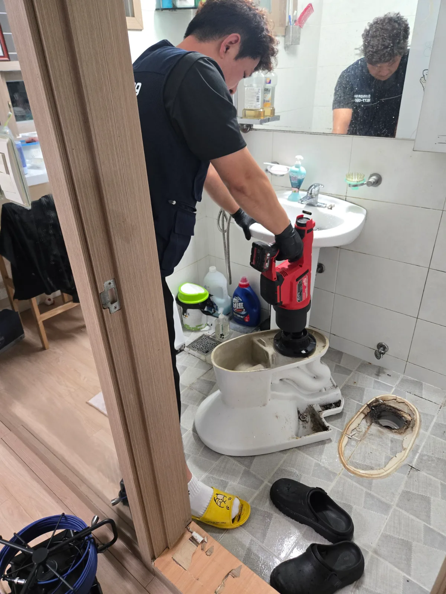

서초구 서초동 변기막힘, 현장 도착 후 진단
서초구 서초동 변기막힘 현장은 처음부터 변기를 탈거한 것이 아니라 관통기와 석션기를 이용한 작업을 먼저 진행했습니다. 두세 차례 반복해서 작업했지만 막힘 증상이 완전히 해결되지 않아 변기 내부와 하부 배관을 직접 확인할 필요가 있었습니다. 단순히 물이 내려가는 것처럼 보여도 이물질이 남아 있으면 같은 증상이 반복될 수 있기 때문에 변기를 탈거해 원인 구간을 확인하기로 했습니다.
1단계: 증상 확인과 필요한 장비 작업
변기 주변이 손상되지 않도록 조심스럽게 분리 작업을 진행했습니다. 변기 탈거 과정이 궁금하셨던 고객님께 작업 순서와 확인해야 할 부분을 이해하기 쉽게 설명해드렸습니다. 변기를 들어낸 뒤 내부 배관과 바닥의 오수관 연결부를 차례대로 확인했습니다. 고객님께서도 설명을 들으니 작업 과정을 이해하기 쉽다며 만족해주셨습니다.

2단계: 원인 구간 처리와 정상 작동 확인
탈거한 변기를 뒤집은 뒤 에어건을 사용해 변기 내부 배관에 걸려 있던 이물질을 밀어내 제거했습니다. 또한 변기 하부 오수관의 수직 구간이 짧아 막힘이 발생하면 물이 많이 차오를 수 있는 구조임을 확인했습니다. 재발과 역류 위험을 줄이기 위해 오수관 초입부에 남아 있던 잔존 이물질도 함께 제거했습니다. 변기 내부만 처리하지 않고 하부 오수관 연결부까지 확인해 막힘의 원인이 남지 않도록 작업했습니다.

작업 결과와 재발 방지 안내
변기 내부와 오수관 초입부의 이물질을 모두 제거한 뒤 변기를 다시 설치했습니다. 단순 관통 작업으로 마무리하지 않고 막힘이 반복될 가능성이 있는 구간까지 확인하고 정리했습니다. 추가 서비스로 욕실 바닥 트랩에 쌓여 있던 이물질도 함께 제거해드렸습니다. 앞으로 물이 평소보다 천천히 내려가거나 수위가 비정상적으로 올라오면 반복 사용하지 말고 원인 구간을 먼저 점검받으시도록 안내드렸습니다.
최종 조치: 변기 탈거 후 내부 이물질 제거 및 오수관 초입부 잔존 이물질 제거
현장 방문 전 확인하는 비용과 작업 범위
신라건축설비는 현장 증상과 배관 구조를 확인한 뒤 필요한 작업과 예상 비용을 안내합니다. 단순 관통으로 해결되는지, 배관내시경·석션·고압세척 또는 변기 탈거가 필요한지는 현장 상태에 따라 달라집니다. 출장비와 야간 작업비, 추가 장비 비용이 발생할 수 있는 경우 작업 전에 먼저 설명하고 동의를 받은 범위에서 진행합니다.
업체를 선택할 때 확인할 사항
무조건적인 ‘0원’ 표현보다 실제 작업 범위, 추가 비용 조건, 사용 장비와 사후 대응 기준을 확인하는 것이 중요합니다. 해결되지 않았을 때의 비용 기준과 작업 후 동일 증상 발생 시 점검 범위를 사전에 문의해두면 불필요한 분쟁을 줄일 수 있습니다.
서초구 변기막힘 자주 묻는 질문
변기막힘은 왜 반복되나요?
서초구 서초동 현장처럼 관통기와 석션 작업을 여러 차례 진행했지만 변기막힘 증상이 해결되지 않음 증상은 원인이 현장마다 다를 수 있습니다. 변기 내부 이물질뿐 아니라 하부 오수관 막힘이나 배관 상태 때문에 반복될 수 있습니다. 같은 변기막힘이 재발하면 막힌 위치와 원인을 다시 확인하는 것이 중요합니다.
변기 물이 안 내려가거나 역류하면 변기뚫는업체를 불러야 하나요?
물이 천천히 내려가거나 수위가 차오르고 변기역류가 반복되면 단순 뚫어뻥보다 전문 장비 점검이 필요한 경우가 있습니다. 현장에서는 증상과 배관 구조를 먼저 확인합니다.
변기 이물질 막힘은 변기를 탈거해야 하나요?
물티슈·청소포·플라스틱·음식물처럼 변기 트랩에 걸린 이물질은 위치에 따라 변기 탈거가 필요할 수 있습니다. 무조건 탈거하지 않고 먼저 막힘 위치를 판단합니다.
변기뚫는업체는 어떤 장비로 작업하나요?
현장 상태에 따라 석션, 에어건, 배관내시경, 변기 탈거 등을 사용합니다. 하부 오수관 문제라면 변기만 뚫는 작업보다 배관 구간 확인이 중요합니다.
변기막힘 비용은 어떻게 정해지나요?
단순 관통인지, 이물질 제거와 변기 탈거가 필요한지, 오수관이나 공용배관 작업이 필요한지에 따라 달라집니다. 추가 장비나 작업이 필요하면 진행 전에 범위와 비용을 안내합니다.
변기에서 냄새가 나거나 물이 자주 차오르는 것도 막힘과 관련 있나요?
악취나 수위 이상이 항상 막힘 때문인 것은 아니지만 배수 불량, 오수관 상태, 연결부 문제와 함께 나타날 수 있습니다. 반복되면 현장 점검으로 원인을 구분해야 합니다.
변기막힘 서울·경기 출동지역
신라건축설비는 서초구 서초동 현장을 포함해 서울 25개 구와 경기도 31개 시·군의 배관 문제를 상담합니다. 현장 거리와 기사 배정 상황에 따라 출동 가능 여부를 먼저 안내드립니다.
서울 전 지역
강남구 · 강동구 · 강북구 · 강서구 · 관악구 · 광진구 · 구로구 · 금천구 · 노원구 · 도봉구 · 동대문구 · 동작구 · 마포구 · 서대문구 · 서초구 · 성동구 · 성북구 · 송파구 · 양천구 · 영등포구 · 용산구 · 은평구 · 종로구 · 중구 · 중랑구
경기도 주요 출동지역
수원시 · 용인시 · 고양시 · 화성시 · 성남시 · 부천시 · 남양주시 · 안산시 · 평택시 · 안양시 · 시흥시 · 파주시 · 김포시 · 의정부시 · 광주시 · 하남시 · 광명시 · 군포시 · 양주시 · 오산시 · 이천시 · 안성시 · 구리시 · 의왕시 · 포천시 · 양평군 · 여주시 · 동두천시 · 과천시 · 가평군 · 연천군